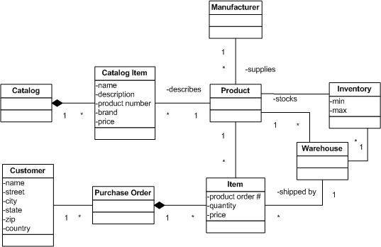

OUM |
Task Overview |
||
Method Navigation |
Current Page Navigation |
||
|
|
||||||||
The purpose of this task is to create a list of business rules that will be implemented for your project. If possible, these rules should be organized by using business rule sets.
During this task, you perform an inventory of business rules. The business rules identified during this task are called candidate rules because, at this stage, they are not expressed in any consistent semantic format, nor are they validated or approved.The mechanisms for discovering candidate business rules include the execution (and/or output) of many other tasks including:
In addition, the very act of assembling the inventory of candidate business rules may also cause the discovery of new business rules.
In a commercial off-the-shelf (COTS) application implementation, business rules may be realized through standard configuration options, through custom-built components that extend the functionality of the COTS system, or through a business rules engine. Perform this task only when there is a need to gain further clarification of the business rules represented in the use cases. Business rules, which can be realized through standard configuration options, such as the selection of a Match Approval Level (i.e., 2, 3, or 4 way matching) for invoices, may not require the additional effort called for in this task. However, complex business rules, or those that can only be realized through custom-built components, or business rules engine, may require the additional effort.
For projects that involve the upgrade of Oracle products, this task would typically be required if the project involved the migration from traditional to service-oriented architecture.
A.ACT.GR Gather Solution Requirements
B.ACT.CS Consolidate Specification
C.ACT.FR Finalize Requirements
Candidate Business Rules
The Candidate Business Rules is a list of possible rules that govern the business, and that remain stable for a longer period of time.
You should follow these steps:
No. |
Task Step | Component | Component Description |
|---|---|---|---|
1 |
Review the Business Process Model (future state) to identify candidate business rules. | Business Process Model | Revisit each process in the Business Process Model and identify candidate business rules. |
2 |
Review Use Case Model and Use Case descriptions to identify candidate business rules | Use Case Descriptions | Review each Use Case scenario and extract the business rules while placing a reference number into the step of the scenario for where the business rule applies. |
3 |
Review the Supplemental Specification to identify candidate business rules. | Supplemental Specification | Review each supplemental requirement in the Supplemental Specification and extract the business rules. |
4 |
Review Trading Partners business rules | Trading Partners rules and regulations | Review any trading partner rules and extract the rules. |
5 |
Review IT Governance Policies to identify candidate business rules. | IT Governance Policy | Review any IT governance policies and extract the rules. |
6 |
Review the Inventory of Candidate Rules. | Business rule repository | Ensure the business rules are complete and unambiguous. |
7 |
Review the Glossary. | Glossary | Place each “new” term into the Glossary and write a description for each |
8 |
Add “Facts” to the Domain Model | Domain Model | For each “new” entity, attribute, association, and/or multiplicity; add it to the Domain Model. |
9 |
Record the source for each discovered rule. | Business rule repository | For each “new” rule, map or link it to the source requirement from which it came. |
The approach to collect candidate business rules may be a combination of harvesting already existing business rules, to review a number of work products to identify new business rules, as well as to organize a business rules workshop with the goal to identify as many business rules candidates as possible.
The Inventory of Candidate Business Rules contains a list of candidate rules that need to be considered. For each rule, include a description of what the rule is about, when the rule should be enforced, and optionally in what way it should be enforced (possibly with alternatives). You may also decide to add the candidate rules to the Rules repository (RA.028) directly rather than preparing a separate inventory of candidate rules.
Business Rules are statements that define or constrain some aspect of the business. Business rules describe the operations, definitions and constraints that apply to an organization in achieving its goals. Some common sources for business rules include: strategic direction from executives, laws and regulations, and contractual obligations.
For example a business rule might state that no credit check is to be performed on return customers.
Individual business rules that describe the same facet of an enterprise are usually arranged into business rulesets.
For example the ruleset “Purchase Authorization Policy” groups together related business rules like this:
Purchase Authorization Policy
- A customer must present one form of identification prior to purchasing product
- A credit check must be performed on first time customers
- No credit check is to be performed on return customers
In general, there are four types of business rules:
1 - Definitions of business terms
The most basic element of a business rule is the language used to express it. The very definition of a term is itself a business rule that describes how people think and talk about things. Thus, defining a term is establishing a category of business rule. Terms should be documented in the Glossary (RD.042) or as entities in the Domain Model (RD.065).For example: Drop Shipping = Drop shipping is the process in which a retailer markets a product, collects payment from the customer and then orders the item from a supplier, to be shipped directly to that customer. The retailer's profit is the difference between the amount collected and the amount spent. No inventory is held and the retailer is not involved in the shipping.
2 - Facts relating terms to each other
The operating structure of an organization can be described in terms of the facts that relate terms to each other. To say that a customer can place an order is a business rule. Facts can be documented as natural language sentences or as relationships, multiplicity, attributes, and generalization structures in a domain model.For example, facts could be written textually like this: A Catalog contains many Catalog Items which describe each Product supplied by a Manufacturer. A Product is stocked in many Warehouses which makeup the Inventory. A Customer can submit a Purchase Order containing many Items that refer to the Products in Inventory that are shipped by a Warehouse.
Or facts can be described by a graphical domain model like this:

3 - Constraints
Every business constrains behavior in some way, and this is closely related to constraints on what data may or may not be updated. To prevent a record from being made or changed is, in many cases, to prevent an action from taking place.For example: A product will not be discounted more than 50% from its wholesale price
4 - Derivations
Business rules define how knowledge in one form may be transformed into other knowledge, possibly in a different form.For example: Multiply discounted subtotal by sales tax rate giving Total
Business Rules may already have been identified earlier, during an earlier enterprise-level effort or in other projects. If so, you should harvest these as an input to this task to determine which are candidates for your project.
Review the Domain Model (RD.065), the Future Process Model (RD.011), and the Use Case Model (RA.023) to identify candidate business rules. While reviewing these models, you may discover rules you have already identified. You should list all the rules that you see as possible candidates to be a business rule. When the Integration Architecture Strategy (TA.030) has been completed in the Elaboration phase, you should also review this work product as this may contain integration business rules that should be included in the list of candidates.
Typically, when you review the Domain Model, look for rules that are related to data, such as rules for data validation, data transformation, dependencies between data, calculations and so on.
While reviewing the Use Case Model, you may also identify data-related rules, but also more process-related rules. The latter, you also identify while reviewing the Future Process Model. For example, there may be conditions that must be true to enter a certain path in the workflow, or conditions that must be true to complete a process.
Ensure that whenever you identify a new rule, you keep track of the source of the rule. Ideally, you should relate the rule to a particular use case or generic supplemental requirement. If you identify a rule based on one of the other models, try to identify a use case that relates to the rule. This makes tracking and testing of the rule a lot easier as you will know in what use case test you can test the business rule.
If there are IT Governance Policies available, you should review them to determine whether there are any business rules that need to be covered to ensure that a specific policy is properly implemented. Specifically look for policies related to security or auditing.
During the creation of the Glossary (RD.042), business objects may be defined in terms of the categories to which they belong. For example, in an Auto Insurance Company, the glossary may define a high-risk policy as a type of policy where the customer has had an auto accident within the past 12 months. This constitutes a candidate rule.
In some sectors, trading partners have agreed upon standards for exchanging business rules. One trading partner will be asked to use the business rules from another trading partner to complete a transaction on their behalf in a manner that is compliant with the underlying business policies. These form another source for relevant enterprise business rules.
Group the initial list of candidate rules logically in terms of common business entities or processes. Once this has been done and similar rules are grouped together, new rules are often discovered. It is also easier to discover any duplicates.
Think about whether the rule actually is larger than it seems in the current context. If the rule may be different in another context, document this in order that the rule can be seen in a larger context. Consider whether the rule is similar for all employees or business units, and whether it applies during the whole lifecycle of the objects to which the rule applies.
If you decide to perform a business rules workshop, you should use the result from the review steps above as an input to the workshop. A good way to organize the workshop is to either use the grouping of candidate rules you did when you reviewed the inventory of candidate rules, or if you have not yet done such a grouping, to identify the most important business domains for which business rules may apply. Let the participants first prioritize the domains or groupings, and then walk through each to identify new business rules, and/or to review rules that have been discovered prior to the workshop. Walking through the already identified business rules will often reveal new candidates.
Do not attempt to perform any classification of the rules at this point of time, but try to identify the nature of the business rules so that it will be easier at a later point of time.
Once an inventory of candidate rules exists, ensure that the source of each rule has been recorded (e.g., specific use case, requirement or policy).
This task has supplemental guidance that should be considered if you are executing a service based on the BPM Project Engineering view. Use the following to access the task-specific supplemental guidance. To access all BPM Project Engineering supplemental information, use the BPM Project Engineering Supplemental Guide.
This task has supplemental guidance that should be considered if you are doing a Webcenter implementation. Use the following to access the task-specific supplemental guidance. To access all WebCenter supplemental information, use the OUM WebCenter Supplemental Guide.
This task involves the following method roles:
Role |
Responsibility |
% |
|---|---|---|
Business Analyst |
Identify and document candidate business rules. If possible, you may want use a business analyst with extensive business rules experience. | 100 |
* Participation level not estimated.
You need the following for this task:
Prerequisite |
Usage |
|---|---|
Enterprise Glossary (ENV.BA.030) Governance Policies Catalog (ENV.GV.030) Maintained Business Rules (ENV.BA.110) |
Use these Envision work products, if available, to identify or further develop Candidate Business Rules or your project. |
Glossary (RD.042.1) Future Process Model (RD.011) Domain Model (RD.065) Use Case Model (RA.023.1) |
Use these work products to identify Candidate Business Rules. |
Prerequisite |
Usage |
|---|---|
Glossary (RD.042.2) Use Case Model (RA.023.2) |
Use these work products to update the Candidate Business Rules as the project evolves. |
Candidate Business Rules (RA.027.1) |
Update the Candidate Business Rules with new and refined business rules. |
Integration Architecture Strategy (TA.030) |
This work product may contain some Integration Business Rules that may need to be included in the list of Candidate Business Rules. |
Prerequisite |
Usage |
|---|---|
Glossary (RD.042.3) Use Case Model (RA.023.3) |
Use these work products to update the Candidate Business Rules as the project evolves. |
Candidate Business Rules (RA.027.2) |
Update the Candidate Business Rules with new and refined business rules. |
The following templates and tools are available to assist with this task:
Template File Name |
Comments |
|---|---|
| MS EXCEL - Use this template when there is no Enterprise Repository or rules engine to record the business rules. In addition, you may insert this worksheet into the MoSCoW List MS Excel work product (RD.045) when the MoSCoW List is being used for traceability on small projects. |
Tool |
Comments |
|---|---|
| The Oracle Enterprise Repository is a COTS Enterprise Repository tool solution that is used to establish and maintain an Enterprise Repository. |
The Candidate Business Rules is used by subject matter experts (SME) to validate and verify Candidate Business Rules. Candidate Business Rules should be reviewed by SMEs and checked for completeness and accuracy. These SMEs are intimately familiar with the facts, constraints, and definitions which govern the business.
The Candidate Business Rule are associated (i.e., mapped or linked to) all other work products that reference these rules. Therefore the distribution of these rules will coincide with the distribution of other work products they reference.
Use the following criteria to check the quality of this work product:
Attribute |
Description |
|---|---|
Atomic |
Single capability, complete; one requirement should not contain multiple capabilities |
Unique |
Self-contained and can stand alone; may be associated with a unique label |
Non-ambiguous |
Stated exactly; not vague or open-ended or subject to different interpretations |
Consistent |
Names and concepts have a single definition |
Comprehensible |
Capable of being understood; logic is understandable |
Abstract |
Implementation independent: “What”, “when”, and “how well” is defined - “how” is deferred to design |
Feasible |
Technologically and economically possible |
Allocable |
Can be clearly allocated to hardware, software, interface, or manual processing |
Verifiable |
Statements can be verified directly from their implementations for compliance |
Traceable |
Clearly traced to higher level requirement and requirement drivers |
Correct |
The requirement statements solve the specified problem; approved by project team |
Flexible |
Modification or addition of requirements should be easily accepted |

Copyright © 2006, 2016, Oracle and/or its affiliates. All rights reserved.